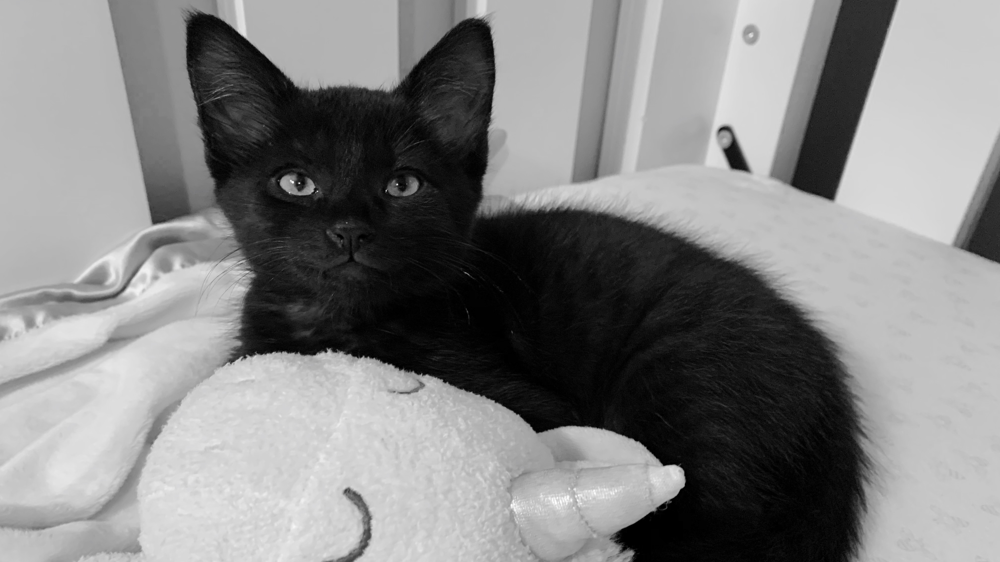
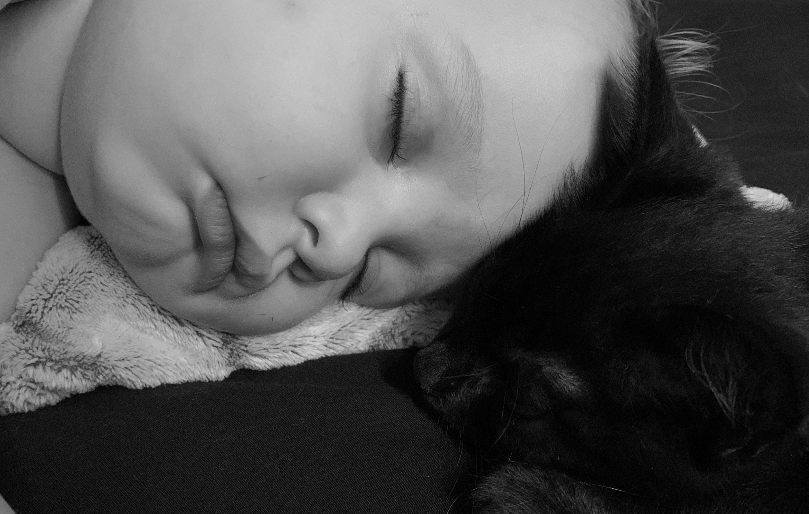

While he's only been with us a month or so, Cosmo is officially one of the family. He's been such a welcome ray of sunshine in the monotony of this strange new pandemic world, and none of us can imagine life without him.
This is the story of how our family of six became a family of seven earlier this fall. At the time,
we had no intention of adding a pet to our totally chaotic loving, nurturing home.
Our oldest child had been begging for a kitten for the last three or so years, but her promises of a
clean room and helping with pet care were less than convincing.
Then, one night, my mom sent me a text with the message, "Look what showed up on our neighbor's porch!" followed by a short video of a tiny, fluffy, squeaking kitten. I took my oldest and youngest over to my mom's house few days later, and it was love at first mew for my daughter. The kitten wasn't too sure at first, but he warmed up quickly. My kiddo cried when we had to leave, and we hadn't been home long before she started trying to convince me that the kitten needed us. Fast forward a week or so, through some kitten mama drama and the most convincing proposal a new third grader could muster, and I was driving home with a mewling ball of fluff and wondering what I'd gotten myself into!
He was dubbed Cosmo Galaxy Cupcake, and the naming process was equal parts entertaining and suspenseful. Have you ever witnessed a four and eight year old trying to come to a compromise over something they are both equally passionate about? The poor little void narrowly escaped with just two middle names (compromised down from four) and only one food reference.
Cosmo settled right in, and seems to consider the toddler and four year olds to be his littermates. He rarely sleeps without touching one of them, and spends a lot of time grooming the four year old's unruly hair or playing whack-a-mole with the toddler through the crib bars. His other favorite pasttimes include getting locked into and out of rooms, trying to get into the refrigerator, and attacking my ankles (and my thumb webbing, and my face at 2:00 am).